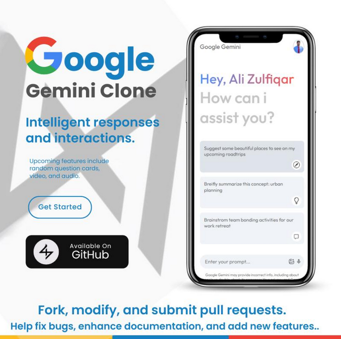

<!DOCTYPE html>
<html lang="en" class="h-full">
<head>
    <meta charset="UTF-8">
    <meta name="viewport" content="width=device-width, initial-scale=1.0">
    <title>Fourtix's Portfolio</title>
    <script src="https://cdn.tailwindcss.com"></script>
    <link href="https://cdnjs.cloudflare.com/ajax/libs/font-awesome/6.0.0-beta3/css/all.min.css" rel="stylesheet">
    <script>
        tailwind.config = {
            darkMode: 'class',
            theme: {
                extend: {
                    colors: {
                        primary: {"50":"#eff6ff","100":"#dbeafe","200":"#bfdbfe","300":"#93c5fd","400":"#60a5fa","500":"#3b82f6","600":"#2563eb","700":"#1d4ed8","800":"#1e40af","900":"#1e3a8a","950":"#172554"}
                    }
                },
                fontFamily: {
                    'sans': ['Inter', 'ui-sans-serif', 'system-ui', '-apple-system', 'system-ui', 'Segoe UI', 'Roboto', 'Helvetica Neue', 'Arial', 'Noto Sans', 'sans-serif', 'Apple Color Emoji', 'Segoe UI Emoji', 'Segoe UI Symbol', 'Noto Color Emoji'],
                    'body': ['Inter', 'ui-sans-serif', 'system-ui', '-apple-system', 'system-ui', 'Segoe UI', 'Roboto', 'Helvetica Neue', 'Arial', 'Noto Sans', 'sans-serif', 'Apple Color Emoji', 'Segoe UI Emoji', 'Segoe UI Symbol', 'Noto Color Emoji']
                }
            }
        }
    </script>
</head>
<body class="bg-gray-100 dark:bg-gray-900 text-gray-800 dark:text-white transition-colors duration-300 ease-in-out font-sans antialiased h-full">
    <div class="flex h-full flex-col md:flex-row">
        <button id="sidebarToggle" class="md:hidden fixed top-4 left-4 z-20 p-2 bg-white dark:bg-gray-800 rounded-md shadow-md">
            <i class="fas fa-bars"></i>
        </button>
        
        <aside id="sidebar" class="fixed md:static top-0 left-0 z-10 w-64 h-full bg-white dark:bg-gray-800 border-r border-gray-200 dark:border-gray-700 flex flex-col transition-transform duration-300 ease-in-out -translate-x-full md:translate-x-0">
            <div class="p-4 flex flex-col items-center">
                
                <h1 class="text-xl font-bold mb-2">Fourtix</h1>
                <p class="text-sm text-gray-600 dark:text-gray-400 text-center mb-4">Full Stack Developer | Blockchain Enthusiast | Entrepreneur</p>
            </div>
            <nav class="flex-1">
                <ul class="space-y-2 p-4">
                    <li>
                        <button data-page="home" class="nav-btn flex items-center w-full p-2 text-gray-900 rounded-lg dark:text-white hover:bg-gray-100 dark:hover:bg-gray-700 group">
                            <i class="fas fa-home w-5 h-5 text-gray-500 transition duration-75 dark:text-gray-400 group-hover:text-gray-900 dark:group-hover:text-white"></i>
                            <span class="ml-3">Home</span>
                        </button>
                    </li>
                    <li>
                        <button data-page="about" class="nav-btn flex items-center w-full p-2 text-gray-900 rounded-lg dark:text-white hover:bg-gray-100 dark:hover:bg-gray-700 group">
                            <i class="fas fa-user w-5 h-5 text-gray-500 transition duration-75 dark:text-gray-400 group-hover:text-gray-900 dark:group-hover:text-white"></i>
                            <span class="ml-3">About</span>
                        </button>
                    </li>
                    <li>
                        <button data-page="skills" class="nav-btn flex items-center w-full p-2 text-gray-900 rounded-lg dark:text-white hover:bg-gray-100 dark:hover:bg-gray-700 group">
                            <i class="fas fa-cogs w-5 h-5 text-gray-500 transition duration-75 dark:text-gray-400 group-hover:text-gray-900 dark:group-hover:text-white"></i>
                            <span class="ml-3">Skills</span>
                        </button>
                    </li>
                    <li>
                        <button data-page="projects" class="nav-btn flex items-center w-full p-2 text-gray-900 rounded-lg dark:text-white hover:bg-gray-100 dark:hover:bg-gray-700 group">
                            <i class="fas fa-project-diagram w-5 h-5 text-gray-500 transition duration-75 dark:text-gray-400 group-hover:text-gray-900 dark:group-hover:text-white"></i>
                            <span class="ml-3">Projects</span>
                        </button>
                    </li>
                    <li>
                        <button data-page="contact" class="nav-btn flex items-center w-full p-2 text-gray-900 rounded-lg dark:text-white hover:bg-gray-100 dark:hover:bg-gray-700 group">
                            <i class="fas fa-envelope w-5 h-5 text-gray-500 transition duration-75 dark:text-gray-400 group-hover:text-gray-900 dark:group-hover:text-white"></i>
                            <span class="ml-3">Contact</span>
                        </button>
                    </li>
                </ul>
            </nav>
            <div class="p-4 mt-auto">
                <a href="https://www.linkedin.com/in/codewithfourtix" target="_blank" rel="noopener noreferrer" class="flex items-center justify-center w-full p-2 text-gray-900 rounded-lg dark:text-white hover:bg-gray-100 dark:hover:bg-gray-700 group">
                    <i class="fab fa-linkedin w-5 h-5 text-gray-500 transition duration-75 dark:text-gray-400 group-hover:text-gray-900 dark:group-hover:text-white"></i>
                    <span class="ml-3">LinkedIn</span>
                </a>
                <button id="darkModeToggle" class="flex items-center justify-center w-full p-2 mt-2 text-gray-900 rounded-lg dark:text-white hover:bg-gray-100 dark:hover:bg-gray-700 group">
                    <i id="darkModeIcon" class="fas fa-moon w-5 h-5 text-gray-500 transition duration-75 dark:text-gray-400 group-hover:text-gray-900 dark:group-hover:text-white"></i>
                    <span class="ml-3">Toggle Dark Mode</span>
                </button>
            </div>
        </aside>
        
        <main class="flex-1 p-20 md-p-4 overflow-y-auto">
            <div id="content" class="max-w-3xl mx-auto">
                <!-- Content will be dynamically inserted here -->
            </div>
        </main>
    </div>

    <script>
        const pages = {
            home: `
                <h2 class="text-3xl font-bold mb-4">Welcome to My Portfolio</h2>
                <p class="text-lg mb-4">Hello! I'm Fourtix, a passionate Full Stack Developer with a deep curiosity for solving real-world problems through technology. My journey is fueled by a love for learning and creating impactful solutions.</p>
                <div class="bg-white dark:bg-gray-800 p-6 rounded-lg shadow-md">
                    <h3 class="text-xl font-semibold mb-2">What Servcies I Provide</h3>
                    <ul class="list-disc list-inside space-y-2">
                        <li>Develop full-stack web applications</li>
                        <li>Tech Consultancy</li>
                        <li>Create innovative tech-driven business solutions</li>
                        <li>Custom API Development and Integration</li>
                        <li>Quick Landing pages </li>
                    </ul>
                </div>
            `,
            about: `
                <h2 class="text-3xl font-bold mb-4">About Me</h2>
                <div class="bg-white dark:bg-gray-800 p-6 rounded-lg shadow-md">
                    <p class="text-lg mb-4">I'm a passionate programmer with a strong foundation in frontend technologies. My journey into programming began on May 25th, 2022, after matriculation, and since then, I have developed expertise in HTML, CSS, JavaScript, ReactJS, Bootstrap, Tailwind, Ant Design, Redux, and API integration through RapidAPI. This foundation has enabled me to create dynamic and responsive web applications, showcasing my ability to bring ideas to life through code.</p>
                    <p class="text-lg mb-4">As a student at Government College University Lahore, I actively participated in the Skill Development Society, where I honed my programming and problem-solving skills. During this time, I built my own website, which allowed me to gain hands-on experience in web development. Beyond academics, I manage an Instagram account, @code_with_fourtix, where I share programming tutorials and insights with a growing community of over 92,000 followers, helping aspiring developers enhance their skills.</p>
                    <p class="text-lg mb-4">With the unwavering support of family, friends, and mentors, I am constantly striving to refine my skills and take on new challenges. I’m excited about the future and look forward to seizing opportunities to grow as a developer. My ultimate goal is to make a significant impact in the tech world through innovation, collaboration, and dedication.</p>
                    With the unwavering support of family, friends, and mentors, I am constantly striving to refine my skills and take on new challenges. I’m excited about the future and look forward to seizing opportunities to grow as a developer. My ultimate goal is to make a significant impact in the tech world through innovation, collaboration, and dedication.
                </div>
            `,
            skills: `
                <h2 class="text-3xl font-bold mb-4">My Skills</h2>
                <div class="grid grid-cols-1 md:grid-cols-2 gap-4">
                    <div class="bg-white dark:bg-gray-800 p-6 rounded-lg shadow-md">
                        <h3 class="text-xl font-semibold mb-2">Front-end</h3>
                        <ul class="list-disc list-inside space-y-2">
                            <li>HTML5, CSS3, JavaScript (ES6+)</li>
                            <li>React.js </li>
                            <li>Tailwind CSS, Bootstrap , Antdesign</li>
                            <li>Responsive Web Design</li>
                        </ul>
                    </div>
                    <div class="bg-white dark:bg-gray-800 p-6 rounded-lg shadow-md">
                        <h3 class="text-xl font-semibold mb-2">Back-end</h3>
                        <ul class="list-disc list-inside space-y-2">
                            <li>Node.js, Express.js</li>
                            <li>Mongo DB</li>
                            <li>RESTful APIs</li>
                            <li>Database Management (SQL, NoSQL)</li>
                        </ul>
                    </div>
                    <div class="bg-white dark:bg-gray-800 p-6 rounded-lg shadow-md">
                        <h3 class="text-xl font-semibold mb-2">Tools & Others</h3>
                        <ul class="list-disc list-inside space-y-2">
                            <li>Git, GitHub</li>
                            <li>Docker</li>
                            <li>CI/CD Pipelines</li>
                        </ul>
                    </div>
                </div>
            `,
            projects: `
                <h2 class="text-3xl font-bold mb-4">My Projects</h2>
                <div class="grid grid-cols-1 md:grid-cols-2 gap-4">
                    <div class="bg-white dark:bg-gray-800 p-6 rounded-lg shadow-md">
                        
                        <h3 class="text-xl font-semibold mb-2">Gemini Ai Clone</h3>
                        <p class="mb-4">A React.js project replicating Google Gemini AI with Gemini AI API integration. Pure CSS for styling and responsive design for optimal viewing on all devices. Built for learning and continuous improvement.</p>
                        <a href="https://gemini-ai-clone.netlify.app" class="text-blue-600 hover:underline">View Project</a>
                    </div>
                </div>
            `,
            contact: `
                <h2 class="text-3xl font-bold mb-4">Contact Me</h2>
                <div class="bg-white dark:bg-gray-800 p-6 rounded-lg shadow-md">
                    <p class="text-lg mb-4">I'm always open to new opportunities, collaborations, or just a friendly chat about technology and innovation. Feel free to reach out to me through any of the following channels:</p>
                    <ul class="space-y-2">
                        <li class="flex items-center">
                            <i class="fas fa-envelope w-5 h-5 mr-2 text-gray-500 dark:text-gray-400"></i>
                            <span>Email: codewithfourtix@example.com</span>
                        </li>
                        <li class="flex items-center">
                            <i class="fab fa-linkedin w-5 h-5 mr-2 text-gray-500 dark:text-gray-400"></i>
                            <span>LinkedIn: linkedin.com/in/codewithfourtix</span>
                        </li>
                        <li class="flex items-center">
                            <i class="fab fa-github w-5 h-5 mr-2 text-gray-500 dark:text-gray-400"></i>
                            <span>GitHub: github.com/codewithfourtix</span>
                        </li>
                    </ul>
                    <p class="text-lg mt-4">I typically respond within 24 hours. Looking forward to connecting with you!</p>
                </div>
            `
        };

        const contentElement = document.getElementById('content');
        const darkModeToggle = document.getElementById('darkModeToggle');
        const darkModeIcon = document.getElementById('darkModeIcon');
        const sidebar = document.getElementById('sidebar');
        const sidebarToggle = document.getElementById('sidebarToggle');

        // Navigation
        document.querySelectorAll('.nav-btn').forEach(btn => {
            btn.addEventListener('click', (event) => {
                const page = event.target.closest('.nav-btn').dataset.page;
                if (page && pages[page]) {
                    contentElement.innerHTML = pages[page];
                    if (window.innerWidth < 768) {
                        sidebar.classList.add('-translate-x-full');
                    }
                }
            });
        });

        // Dark mode toggle
        darkModeToggle.addEventListener('click', () => {
            document.documentElement.classList.toggle('dark');
            updateDarkModeIcon();
        });

        function updateDarkModeIcon() {
            const isDarkMode = document.documentElement.classList.contains('dark');
            darkModeIcon.className = isDarkMode
                ? 'fas fa-sun w-5 h-5 text-gray-500 transition duration-75 dark:text-gray-400 group-hover:text-gray-900 dark:group-hover:text-white'
                : 'fas fa-moon w-5 h-5 text-gray-500 transition duration-75 dark:text-gray-400 group-hover:text-gray-900 dark:group-hover:text-white';
        }

        // Sidebar toggle for mobile
        sidebarToggle.addEventListener('click', () => {
            sidebar.classList.toggle('-translate-x-full');
        });

        // Close sidebar when clicking outside on mobile
        document.addEventListener('click', (event) => {
            if (window.innerWidth < 768 && !sidebar.contains(event.target) && !sidebarToggle.contains(event.target)) {
                sidebar.classList.add('-translate-x-full');
            }
        });

        // Initial content load
        contentElement.innerHTML = pages.home;
        updateDarkModeIcon();
    </script>
</body>
</html>